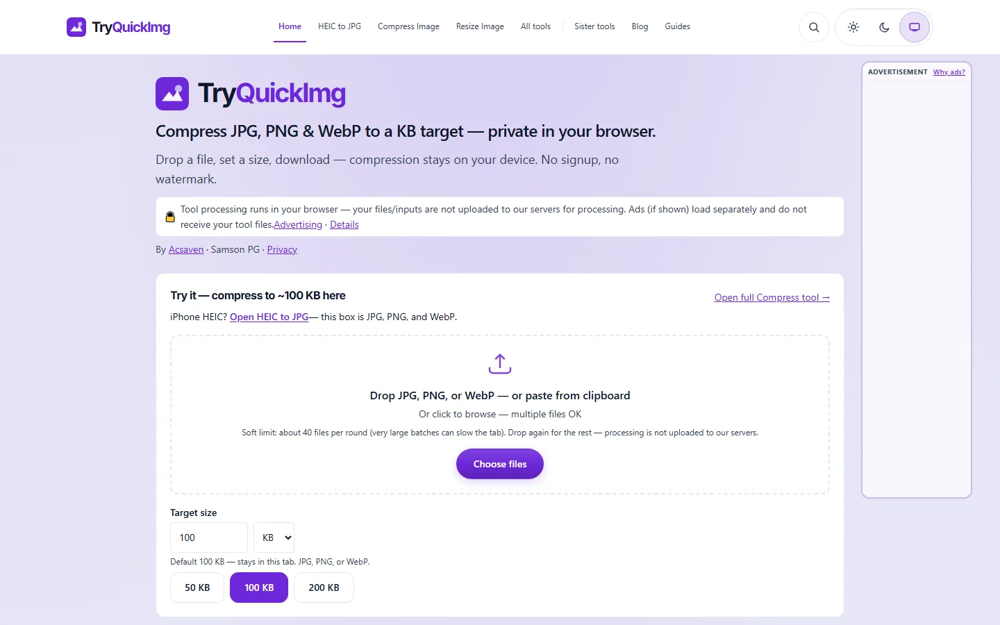

Desktop capture of the live homepage (1440px). Scales to any screen — this is the offline original look.
Local-first
Images stay on device.
Fast tools
No signup wall for core tools.
Try family
Acsaven studio utility.
More visuals

Fallback for when the live domain is down. Not a working app — the screenshot is the truth.
© 2026 Samson P G · Homepage archive